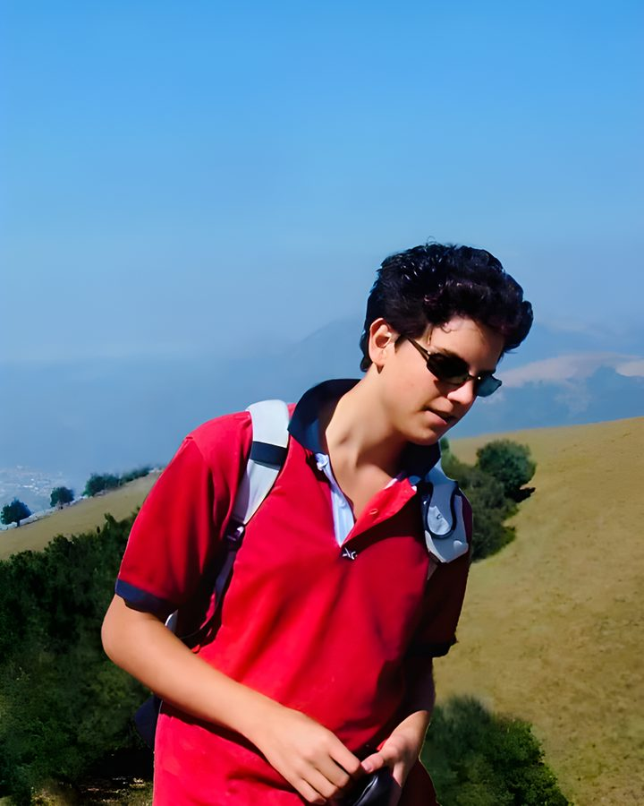

“Lázaro, vem para fora!” — Jo 11,43Lázaro estava no túmulo, e Jesus o chamou pelo nome. Neste encontro, Ele chama você também: pra sair de tudo o que te prende e viver a vida original que Ele sonhou pra você.
Nosso santo padroeiro03

911991 — 2006
Carlo Acutis
Jovem, gamer, programador, apaixonado por futebol, e com a Eucaristia no centro da vida. Prova de que dá pra ser santo sendo você mesmo.
“A Eucaristia é a minha autoestrada para o Céu.”
#NoFlowDoCéu
Checklist04
O que levar
Vai marcando conforme separa. Fica salvo aqui no seu celular.
0/7
Mochila em preparação
mochila pronta. te vejo dia 28 :)
Fique ligado05
Avisos
Dica de ouro
Celular melhor deixar em casa
Até pode levar, mas durante o encontro ele não vai ser usado: fica guardado o tempo todo. Então o melhor é nem trazer. São dois dias pra desconectar de tudo e se conectar com Deus e com quem estiver do seu lado.
Horário
Fala com seus tios
Horário de chegada e de saída quem passa são os seus tios. Fique atento às mensagens deles e em contato direto até o encontro. O resto? Surpresa.
Atitude
Coração aberto
Não precisa saber o que vai acontecer nem chegar com nada pronto. Só venha disposto a viver cada momento. Deus cuida do resto.
Local do encontro
Escola Júlio Gomes Camisão
Parque Imperial · sábado 28 e domingo 29 de novembro
As inscrições pro 7º EJC já fecharam, e o prazo das exceções terminou em 21/11. Mas o EJC acontece todo ano, e em 2027, se Deus quiser, a gente quer muito você com a gente.
A gente respeita qualquer decisão sua, de verdade. Só conta pra gente: o que pesou mais?
Você escolheu:
Faz todo sentido.
Boa sorte nas provas, de verdade! A gente vai rezar por você.
E fica tranquilo: o EJC acontece todo ano. Em 2027, se Deus quiser, você pode fazer, e a gente vai estar te esperando.
Próximo EJC2027se Deus quiser
A gente entende.
Imprevisto acontece. O EJC acontece todo ano, e em 2027, se Deus quiser, a gente quer muito você com a gente.
Se alguma coisa mudar até o dia 21/11, é só falar com o seu tio.
Próximo EJC2027se Deus quiser
Valeu por avisar.
Trabalho é responsabilidade, e a gente respeita. Vamos rezar por você nesse fim de semana.
Se der pra trocar a escala ou conseguir folga nos dias 28 e 29, é só falar com o seu tio até 21/11. Se não der, As inscrições deste ano já fecharam, mas em 2027, se Deus quiser, a gente te espera.
Próximo EJC2027se Deus quiser
Tem que ser os dois dias.
O EJC é vivido do começo ao fim: só dá pra participar se for nos dois dias inteiros, sábado e domingo. Cada momento prepara o próximo, então não tem como entrar no meio ou ir só em um dia.
Se der pra reorganizar e ficar os dois dias, fala com o seu tio até 21/11. Se não der agora, As inscrições deste ano já fecharam, mas em 2027, se Deus quiser, a gente te espera.
Próximo EJC2027se Deus quiser
Bora conversar?
Seja o que for, você não precisa resolver sozinho. Uma conversa rápida pode mudar tudo, e fica só entre a gente.